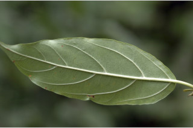
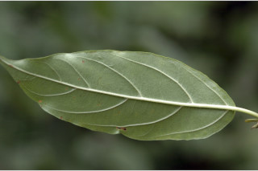
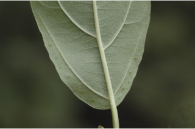
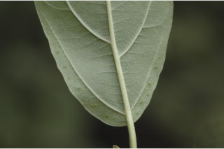
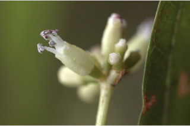
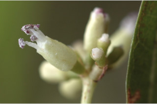
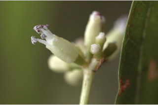
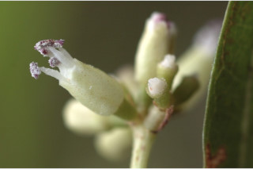

Small trees, up to 8 m tall.
8 ಮೀ. ಎತ್ತರದವರೆಗೆ ಬೆಳೆಯುವ ಸಣ್ಣ ಮರಗಳು.
8 മീറ്റര് വരെ ഉയരത്തില് വളരുന്ന ചെറുമരങ്ങള്.
சிறு மரம் 8 மீ. உயரம் வரை வளரக்கூடியது
Leaves simple, opposite, decussate; stipule caducous; petiole 2-3 cm long, canaliculate; lamina 5-13 x 2.5-4 cm, ovate-lanceolate, apex long acuminate, base acute to slightly rounded, margin entire or slightly serrate, glands along the margin beneath the lower third of lamina; midrib canaliculate; secondary_nerves 4-6 pairs, the lower most ones subopposite, domatia hairy; tertiary_nerves percurrent.
ಎಲೆಗಳು ಸರಳ, ಕತ್ತರಿಯಾಕಾರದ ಅಭಿಮುಖ ಜೋಡಣಾ ವ್ಯವಸ್ಥೆಯಲ್ಲಿರುತ್ತವೆ; ಕಾವಿನೆಲೆಗಳು 2 ರಿಂದ 3 ಸೆ.ಮೀ. ಉದ್ದವಿದ್ದು ಕಾಲುವೆಗೆರೆಗಳನ್ನು ಹೊಂದಿರುತ್ತವೆ; ಪತ್ರ 5 – 13 2.5 – 4 ಸೆ.ಮೀ., ಅಂಡ-ಭರ್ಜಿಯಾಕಾರದಲ್ಲಿದ್ದು, ಉದ್ದವಾದ ಕ್ರಮೇಣ ಚೂಪಾಗುವ ಮಾದರಿಯ ತುದಿಭಾಗ, ಚೂಪಾದುದರಿಂದ ಹಿಡಿದು ಸ್ವಲ್ಪಮಟ್ಟಿಗೆ
സമ്മുഖ, ഡെക്കുസേറ്റ് ക്രമത്തിലുളള ലഘുപത്രങ്ങള്; രണ്ടുപര്ണ്ണങ്ങള് കൊഴിഞ്ഞു വീഴുന്നതാണ്; ഇലഞെട്ടിന് 2 മുതല് 3 സെ.മീ നീളം, ചാലോട് കൂടിയതാണ്; പത്രഫലകത്തിന് 5 സെ.മീ മുതല് 13 സെ.മീ വരെ നീളവും 2.5 സെ.മീ മുതല് 4 സെ.മീ വരെ വീതിയും, അണ്ഡാകാര-കുന്താകൃതി
இலைகள் தனித்தவை, எதிரடுக்கமானவை, குறுக்குமறுக்கமானவை; இலையடிச்செதில் உதிரக்கூடியது; இலைக்காம்பு 2-3 செ.மீ. நீளமானது, குறுக்குவெட்டுத் தோற்றத்தில் கேனாலிகுலேட்; இலை அலகு 5-13 X 2.5-4 செ.மீ., முட்டை வடிவம் - ஈட்டி வடிவம் கொண்டது; அலகின் நுனி நீண்ட அதிக்கூரி
Inflorescence compound umbel and corymbiform; flowers greenish white, anther violet.
ಪುಷ್ಪಮಂಜರಿ ಸಂಯುಕ್ತ ಪೀಠಛತ್ರ ಮಾದರಿಯವು ಹಾಗೂ ನೀಳಛತ್ರ ರೂಪಿಗಳು; ಹೂಗಳು ಹಸಿರು ಮಿಶ್ರಿತ ಶ್ವೇತ ವರ್ಣದವು, ಪರಾಗಶಯ ನೇರಳೆ ಬಣ್ಣ ಹೊಂದಿರುತ್ತವೆ.
പൂങ്കുലകള് ബഹു കോറിംബ് രൂപത്തിലുള്ള ബഹുഛത്രമഞ്ജരി ആണ്; പച്ചകലര്ന്ന വെളുത്ത പൂക്കള്, കേസരങ്ങള്ക്ക് വയലറ്റ് നിറം.
மஞ்சரி கூட்டு அம்பல் மற்றும் கோரியம்ப், மலர்கள் பச்சை கலந்த வெண்நிறம், மகரந்த பை வைலட் நிறம்
Drupe, ellipsoid, glabrous; 1-seeded, compressed.
ಕಾಯಿಗಳು ಡ್ರೂಪ್ ಮಾದರಿಯವಾಗಿದ್ದು ಅಂಡವೃತ್ತಾಕೃತಿಯಲ್ಲಿದ್ದು ರೋಮರಹಿತವಾಗಿರುತ್ತವೆ. ಡ್ರೂಪುಗಳು ಅದುಮಿದಂತಿದ್ದು ಒಂದು ಬೀಜವನ್ನೊಳಗೊಂಡಿರುತ್ತದೆ.
കായ അരോമിലമായ, ദീര്ഘഗോളാകാര ആഭ്രകമാണ്; പരന്നിരിക്കുന്ന ഒറ്റ വിത്തുമാത്രം.
உள்ளோட்டுத்தசைகனி (ட்ரூப்), நீள்வட்டம், உரோமங்களற்றது; ஒரு விதை கொண்டது, பருத்தது


 

 



 


